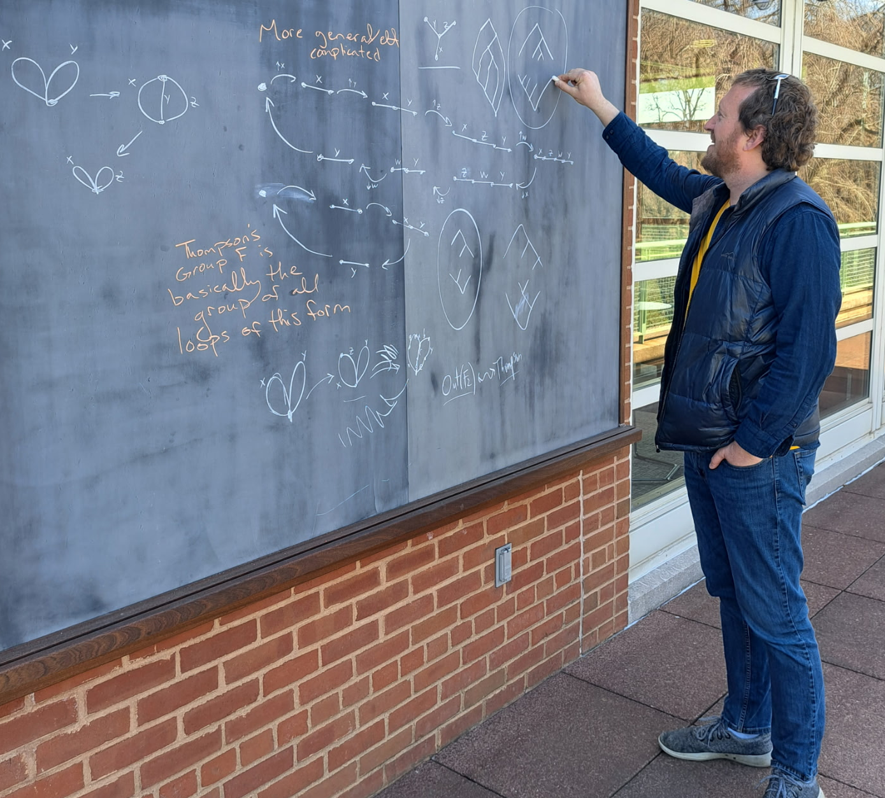

|
|
Matthew Zaremsky
Office: Hudson 113
Email: mzaremsky at albany dot edu

Photo by Catherine Pfaff.
Here is my CV.
I am an associate professor at the University at Albany (SUNY).
I previously had various postdoctoral positions at Cornell University, Binghamton University and Bielefeld University.
I received my PhD from the University of Virginia in 2011.
I received my Bachelor's from Kenyon College in 2007.
I grew up in Yellow Springs, Ohio.
Here is a list of open problems.
I help organize the UAlbany algebra/topology seminar.
I am on the editorial board for the New York Journal of Mathematics.
|